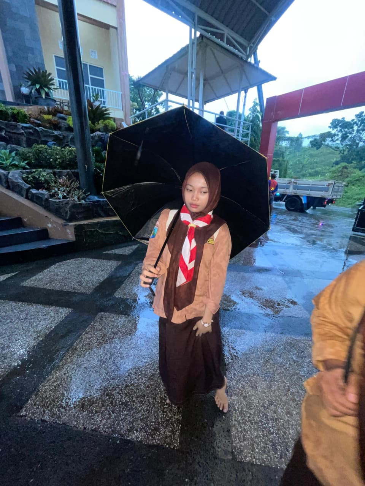

Citra Amelia, Ya itulah Namanya. Lahir pada hari Minggu, 14 Maret 2010, setidaknya google bilang seperti itu saat aku mencari 14 Maret 2010. Okey lupakan tanggal lahir dimana manusia tercantik ini lahir, Sebelum lanjut pada About her semoga kamu suka apa yang aku buat ya sayang karena aku butuh waktu 3 minggu buat belajar coding web only for uu biar happy dikasih web khusus, Baiklah kita mulai saja. About Her, dia adalah pemilik senyum manis dan tulus yang selalu ingin aku lihat setiap harinya, dia adalah pemilik pelukan hangat yang selalu mendekap dan memperbaiki luka dan runtuhku, dia adalah pemilik tatapan teduh yang selalu membuat hati sejuk saat tidak sengaja bertatap mata dengannya. Dia sosok sederhana yang menurutku berbeda, sederhana dalam dirinya membuatku tertarik padanya. Maksudku, tanpa mencari perhatian, diriku seolah memang ditarik padanya. Dia tidak melakukan banyak hal untuk membuatku jatuh cinta, Hanya saja aku yang terlebih dahulu menaruh rasa pada dirinya, yaa.. seperti kata Raim Laode dilagunya yang berjudul “Dunia yang Nanti” penggalan liriknya berbunyi seperti “itulah kenapa jatuh cinta dikatakan jatuh, karena sbagaimana kita jatuh kita tidak punya kuasa”. Dia sangat persis dengan apa yang Raim Laode tuliskan dilagunya, Dia indah dengan ciri khasnya sendiri. Bagiku dia manusia sempurna yang selalu punya beribu ribu cara untuk melukis senyum diwajahku, Membuatku bahagia, tertawa dan selalu ceria. Terkadang sedikit menyebalkan, tapi itulah dia. Maybe aku jarang mengucapkan iloveu, but I wish semoga dia selalu dalam lindungan allah, semoga bahagia selalu menyertainya, semoga tercapai cita citanya, menjadi kebanggan kedua orang tua nya, disehatkan jiwa dan raganya, dipermudahkan segala urusannya, dilancarkan rezekinya, dan semoga hal hal baik selalu menyertainya, terkadang memang banyak sekali Bahasa cinta yang aku ucapkan, namun yang paling indah adalah sebuah doa yang terpanjat, sebelum tulisan indah tentang dirimu ini berakhir izinkan saya mengucapkan bahwa jika seluruh aksara menjadi tidak berdaya saat berhadapan dengan senyuman mu itu, seolah olah kreativitas menurun dan tergantikan dengan nyanyian, ucapan indah, dan kalimat indah yang serupa dan layak disematkan untuk dia yang berparas rupawan dan berhati indah tersebut